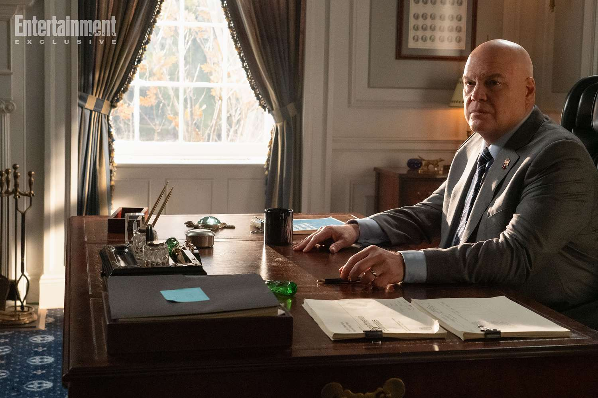

Après une longue attente, les fans de l’univers Marvel vont enfin retrouver Matt Murdock dans Daredevil: Born Again. Prévue pour le 4 mars 2025 sur Disney+, la série marque le retour du justicier aveugle de Hell’s Kitchen au sein du Marvel Cinematic Universe (MCU). Voici tout ce qu’il faut savoir sur cette nouvelle production.
Synopsis Officiel
Dans Daredevil: Born Again, Matt Murdock (Charlie Cox) reprend son rôle d’avocat le jour et de justicier la nuit, alors qu’il affronte une montée de la criminalité à New York orchestrée par Wilson Fisk (Vincent D’Onofrio), récemment sorti de prison et déterminé à prendre le contrôle de la ville. Murdock devra faire face à de nouveaux ennemis tout en tentant de protéger ses proches et son identité.
Le Retour de Personnages Clés
- Charlie Cox revient dans le rôle de Matt Murdock / Daredevil.
- Vincent D’Onofrio reprend son rôle de Wilson Fisk / Le Caïd, qui sera le principal antagoniste de la série.
- Jon Bernthal fera son retour en tant que Frank Castle / The Punisher.
- Deborah Ann Woll (Karen Page) et Elden Henson (Foggy Nelson) ne devraient pas apparaître dans cette première saison.

Le Rôle de Fisk dans la Série
Wilson Fisk, alias le Caïd, jouera un rôle central dans la série. Après avoir consolidé son pouvoir, il chercherait à entrer en politique afin de légitimer son influence sur New York. De nombreuses rumeurs suggèrent que Fisk pourrait devenir maire de la ville, rendant la lutte de Daredevil encore plus difficile. Son statut politique pourrait lui permettre d’exploiter les lois pour traquer les justiciers, forçant Matt Murdock à agir dans l’ombre plus que jamais.
Films et Séries à Voir pour Comprendre
- Daredevil (série Netflix, 2015-2018) - Introduit Matt Murdock, Fisk et le ton sombre du personnage.
- The Defenders (série Netflix, 2017) - Rassemble Daredevil avec d’autres héros du MCU Netflix.
- Hawkeye (série Disney+, 2021) - Contient un aperçu du retour de Fisk dans le MCU.
- Echo (série Disney+, 2024) - Développe davantage l’influence de Fisk et prépare le terrain pour Born Again.
- Spider-Man: No Way Home (film, 2021) - Contient un caméo de Matt Murdock.
- She-Hulk (série Disney+, 2022) - Présente Daredevil dans un ton plus léger.
Rumeurs et Théories
- Un caméo de Tom Holland en Spider-Man serait en discussion pour une scène clé.
- Le personnage de Muse, un tueur en série fanatique d’art macabre, serait introduit dans la série.
- L’apparition possible d’anciens personnages de la série Netflix, comme Bullseye (Wilson Bethel).
- Un ton plus proche de la série Netflix que des productions récentes du MCU.
- Le retour d’Elektra (Élodie Yung) dans un rôle inattendu, potentiellement liée au chaos provoqué par Fisk.
- Des rumeurs indiquent que l’un des Defenders pourrait faire son retour pour épauler Daredevil face à Fisk, possiblement Jessica Jones ou Luke Cage.
Date de Sortie et Bande-Annonce
La série Daredevil: Born Again sera diffusée sur Disney+ à partir du 4 mars 2025. Les deux premiers épisodes seront disponibles immédiatement, suivis d’un épisode par semaine.
La bande-annonce officielle, récemment dévoilée, promet une série sombre et intense, avec des combats brutaux et une ambiance proche du matériel original.